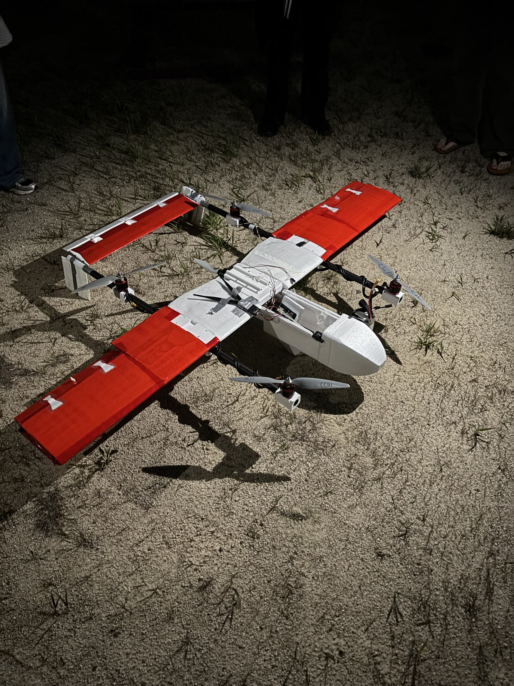
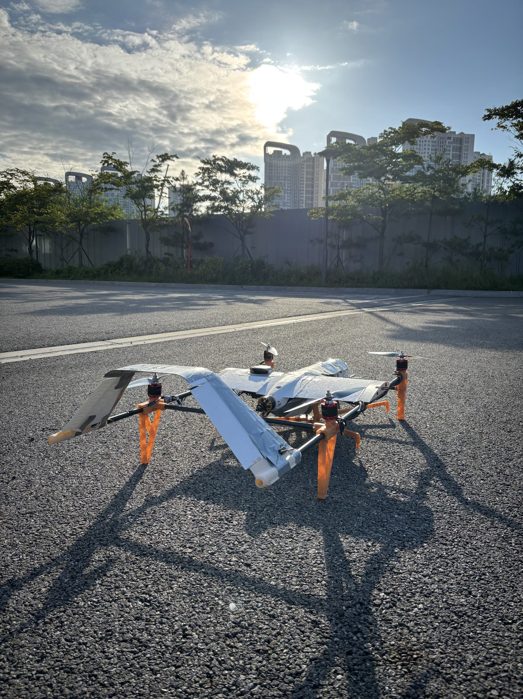
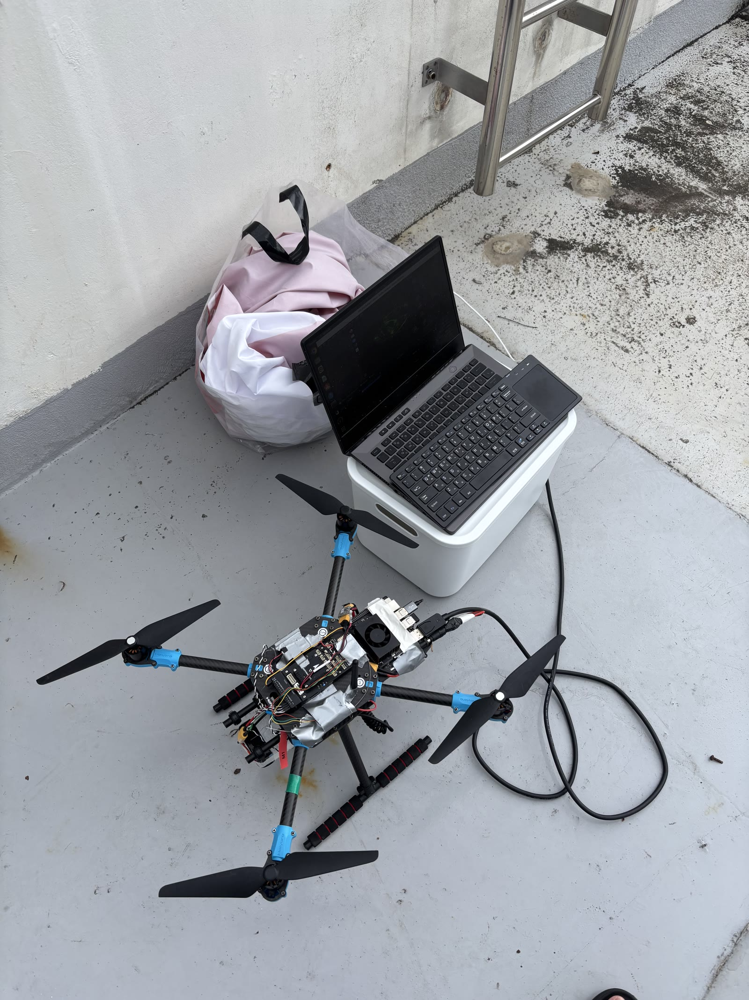
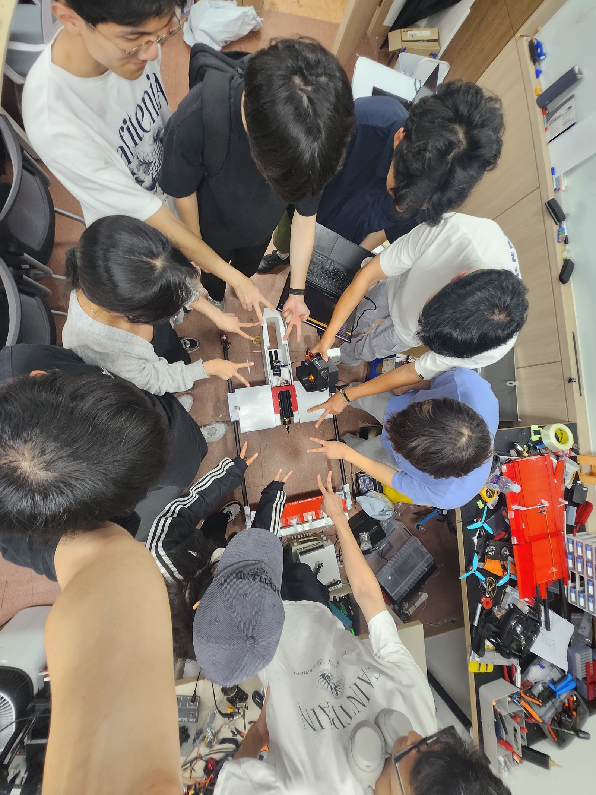

Autonomous Rescue VTOL Aircraft
23rd Korea Robotic Aircraft Competition
April–September 2025 · Seoul National University · Team Bulnabi
I worked on the control software engineering team for a model aircraft with vertical takeoff and landing (VTOL) capabilities and visual target recognition for autonomous rescue. My work focused on perception and control software using YOLO and ROS 2 for target recognition and alignment control.
Our team placed in the top 7 of 37 teams at the 23rd Korea Robotic Aircraft Competition.
Flight demonstration
Watch the aircraft in flight in the project demonstration below.
My contribution
As a member of the control software engineering team, I developed software connecting visual target recognition with aircraft alignment control:
- Target recognition: used YOLO for the perception component of the autonomous rescue task.
- Perception and control integration: developed ROS 2 software for target recognition and alignment control.
The aircraft design, construction, and competition result were a team effort. The photos below document the aircraft’s development and the separate quadcopter used for computer vision testing.
Aircraft development
Preliminary design
The preliminary aircraft combined a winged airframe with four lift rotors. The photo and hover test document this early configuration.

Aircraft hardware
This view shows the aircraft with its wings detached, exposing the central airframe, lift rotors, and landing gear.

Computer vision test platform
A separate quadcopter was used for computer vision testing. The dedicated platform allowed the perception work to be tested alongside development of the competition aircraft.

Team and outcome
The project ran from April to September 2025. Working with Team Bulnabi at Seoul National University, I contributed perception and control software to a shared aircraft development effort that placed in the top 7 of 37 teams.
